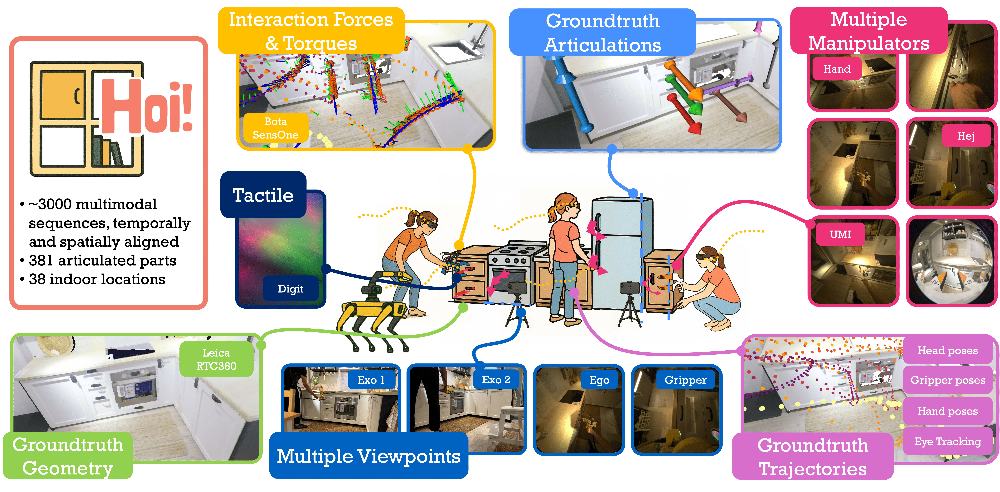
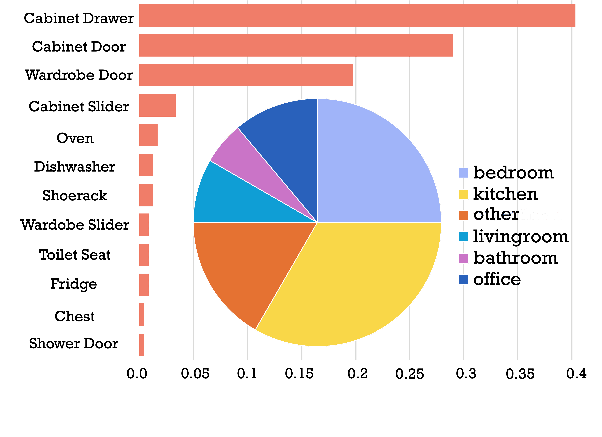
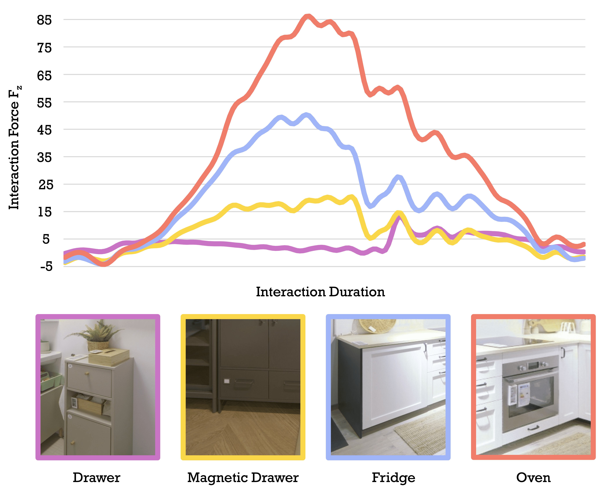
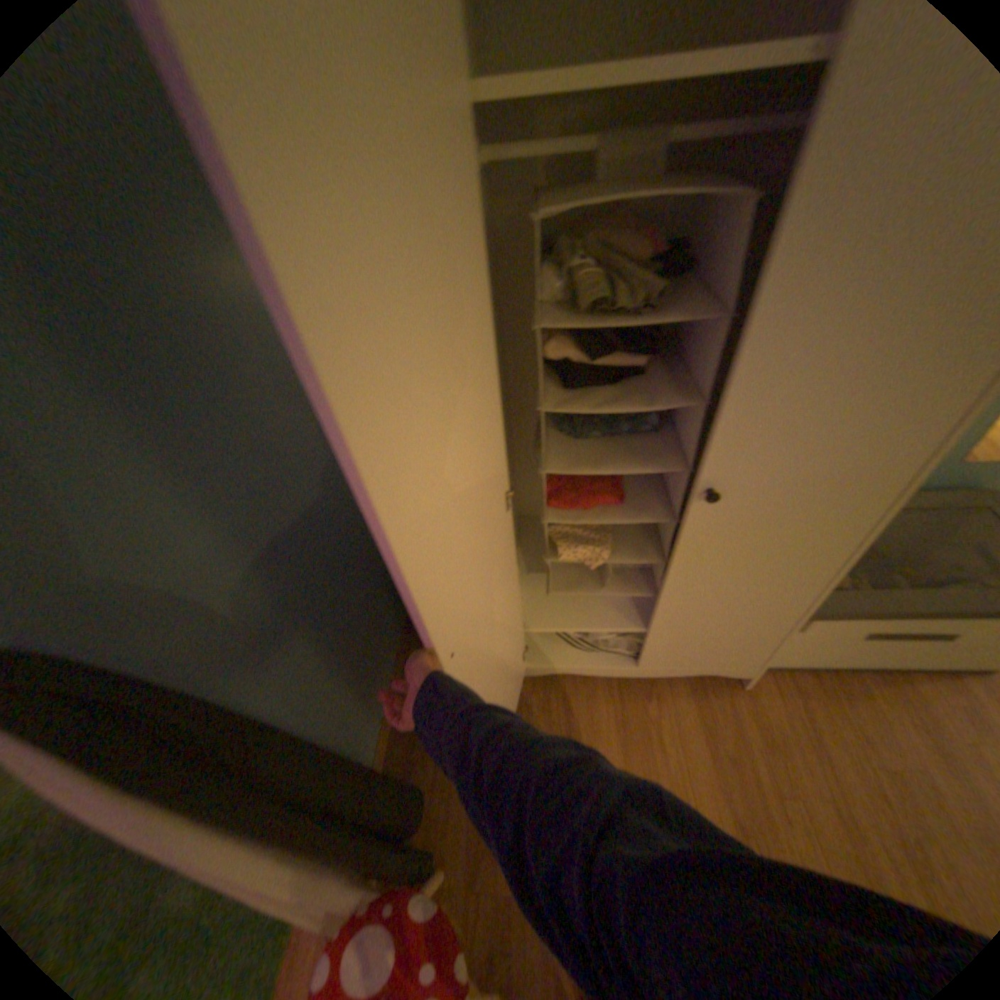
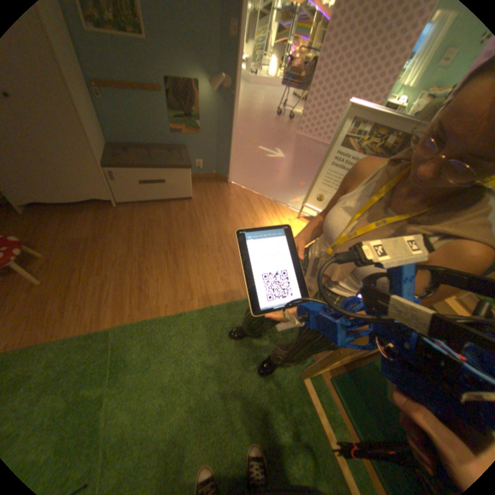
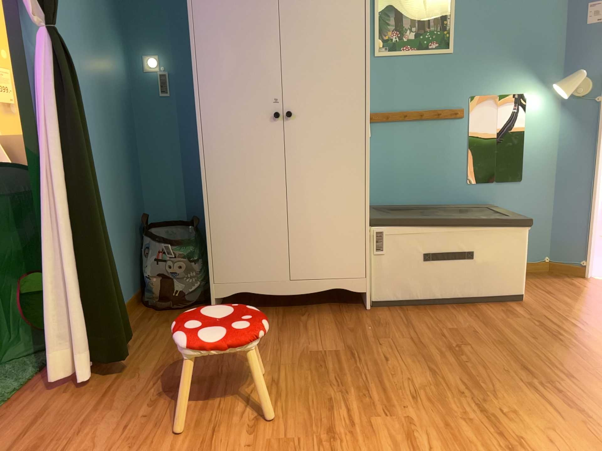
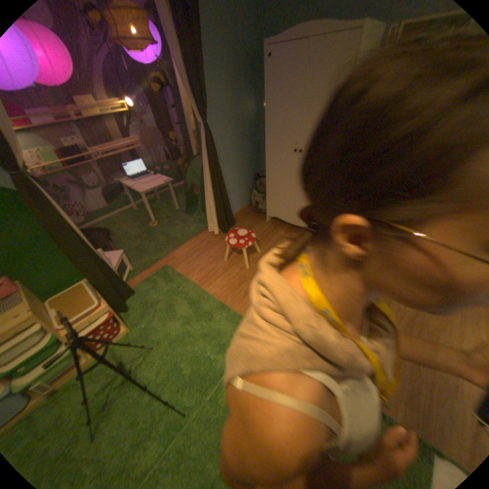

A Multimodal Dataset for Force-Grounded, Cross-View Articulated Manipulation
Coupling what is seen, what is done, and what is felt during real human interaction with articulated objects.
Abstract
We present a dataset for force-grounded, cross-view articulated manipulation that couples what is seen with what is done and what is felt during real human interaction. The dataset contains 3048 sequences across 381 articulated objects in 38 environments. Each object is operated under four embodiments — (i) human hand, (ii) human hand with a wrist-mounted camera, (iii) handheld UMI gripper, and (iv) a custom Hoi! gripper — where the tool embodiment provides synchronized end-effector forces and tactile sensing. Our dataset offers a holistic view of interaction understanding from video, enabling researchers to evaluate how well methods transfer between human and robotic viewpoints, but also investigate underexplored modalities such as force sensing and prediction.
Data Collection
The video below shows all recording streams combined and synchronized, illustrating the full capture procedure for a single sequence.
The Dataset
4 Manipulation Schemes
Hoi! gripper, human hand, hand with wrist-camera, and UMI gripper — enabling cross-embodiment research.
Multi-View Capture
Egocentric (Aria glasses), manipulation-centric (wrist/gripper), and exocentric (iPhone RGB-D) viewpoints.
Force & Tactile Sensing
Synchronized force/torque and DIGIT tactile sensing through the custom Hoi! gripper.
Spatial Alignment
All recordings registered to a common frame via Leica laser scans, with articulated and static states.
381 Articulated Objects
Drawers, cabinets, dishwashers, fridges — across 38 real-world kitchens, bathrooms, and bedrooms.
Temporally Aligned
Nanosecond-resolution timestamps across all recording modules within each session.
The Hoi! Gripper
The Hoi! gripper is a custom end-effector designed to bridge human and robotic manipulation. Worn like a handheld tool, it captures aligned force/torque and tactile sensing alongside egocentric video — making it the primary instrumented embodiment in the dataset.
- F/T Sensing — 6-axis force/torque at the end-effector
- Tactile Sensing — DIGIT sensor for contact texture and pressure
- Stereo Camera — manipulation-centric stereo camera aligned with interaction
Paper Figures
Key figures from the paper. See the full paper for all figures and details.



Explore Samples
RGB image sequences from each recording modality and a 3D Leica point cloud. Select a scene to explore.




Leica Point Cloud — Bedroom
Click and drag to rotate · Scroll to zoom
Dataset Documentation
Download the Dataset
Team


Contributors
Citation
@InProceedings{Engelbracht_2026_CVPR,
author = {Engelbracht, Tim and Zurbrügg, René and Wohlrapp, Matteo and Büchner, Martin and Valada, Abhinav and Pollefeys, Marc and Blum, Hermann and Bauer, Zuria},
title = {Hoi! - A Multimodal Dataset for Force-Grounded, Cross-View Articulated Manipulation},
booktitle = {Proceedings of the IEEE/CVF Conference on Computer Vision and Pattern Recognition (CVPR)},
month = {June},
year = {2026},
pages = {8880-8890}
}License
The Hoi! dataset is released under the Creative Commons Attribution 4.0 International (CC BY 4.0) license. You are free to share and adapt the material for any purpose, including commercially, as long as you give appropriate credit.